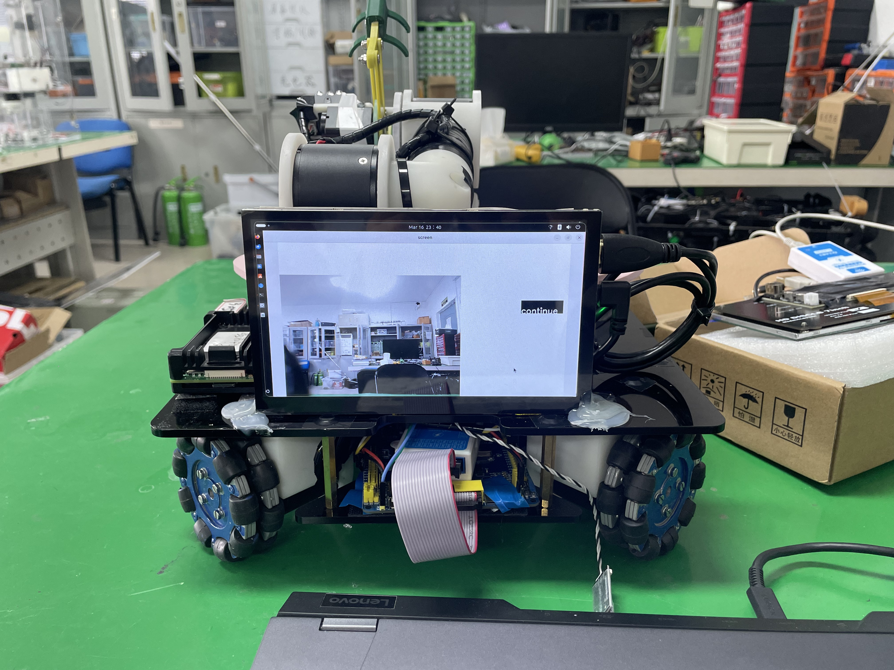

教育经历
北京航空航天大学
硕士 · 控制工程
2026.09 – 至今
杭州国际创新研究院 · XStarLab 实验室
研究方向：反无人机系统 · 强化学习控制 · Sim2Real

北京科技大学
学士 · 机器人工程
2022.09 – 2026.06
机械工程学院
主修：机器人学、自动控制原理、机器人控制技术
北京航空航天大学杭州国际创新研究院控制工程专业硕士研究生（研0），目前在 XStarLab 实验室，研究方向为 反无人机系统 与 强化学习控制，聚焦 Sim2Real 落地方向。
本科毕业于北京科技大学机械工程学院机器人工程专业（2022.09 – 2026.06），综合成绩 87.64/100，专业排名 10/26。主修机器人学、自动控制原理、机器人控制技术等课程。
关注 ROS2 / MoveIt2 / Isaac Gym / PPO / LQR / MPC 等技术路线，热衷于机器人控制算法从仿真到实机的完整落地。
硕士 · 控制工程
2026.09 – 至今
杭州国际创新研究院 · XStarLab 实验室
研究方向：反无人机系统 · 强化学习控制 · Sim2Real
学士 · 机器人工程
2022.09 – 2026.06
机械工程学院
主修：机器人学、自动控制原理、机器人控制技术
强化学习控制算法工程师（实习）
负责单关节电机模组参数辨识、T-N 曲线与扫频实验，缩小 sim2real gap；底层驱动部署；轮足机器人 LQR + VMC 起跳落地控制。

基于 STM32F407 + 树莓派的智能物流搬运系统。上位机实现视觉定位与目标识别，底盘闭环运动控制，机械臂正逆运动学解算完成物体抓取，FreeRTOS 实现多任务实时调度。
了解更多 →六自由度机械臂完整仿真与控制系统，包括改进 D-H 参数运动学建模、URDF 模型构建、ROS + MoveIt 轨迹规划与避障，以及 CAN 总线上下位机通信接口开发。
了解更多 →